Property Analysis
1 Article
2 First Article
It is a truth universally acknowledged that a married man in possession of a good fortune must be in want of a house.
I've taken the liberty of updating good old Jane's statement for more contemporary times. This article talks about my process of looking at and understanding property prices in Ireland.
Some background for my non-Irish readers:
- Ireland was mostly poor from the 1930's to the 1990's
- Banks were very hesitant to lend money to anyone
- And the interest rates were very high
This all changed during the Celtic Tiger period, when a flood of cheap euro-denominated money was dropped in by German and french helicopters 1. This lead (predictably) to a massive property bubble, which was sadly interrupted by the advent of financial contagion in 2007. Over the next few years, the economy fell apart, we were dragged into a bailout program, and house prices collapsed.
A few years after that, they started to recover, and right now, we have a massive housing crisis in that people can't afford houses, which puts more stress on the rental market, increasing prices.
Given that I don't trust the property-porn engaged in by the media and government, I decided to take matters into my own hands, and consult the property price register (PPR for future reference) and figure out whether or not I should buy or continue to slum it in a hell of short-term lets and fear 2.
2.1 Property Price Register
So, the property price register was established in the depths of the economic crisis 3, and so has a number of problems. The most obvious is that we only have data from 2010. Given data from the boom, it would be a much easier task to estimate tops and bottoms, but we can only work with what we have. The second problem with the data is that Ireland doesn't have postcodes 4, which makes localisation of the properties a challenge.
Nonetheless, the nice people at the PPR have collated the data for us, so there is that. They helpfully provide the data in CSV format, and have a document which contains all of the property data, which can be found here 5
So, on with the show! 6
2.1.1 Data Cleaning
In data analysis, much as in life, cleaning is important. Unfortunately, while keeping ones house and body cleaning rarely takes up all of one's time, data cleaning, can, and often does take up almost all of the time. So, enjoying (or at least not hating) this process, is an important career skill.
Anyways, so the first thing we do is look at the data
dat <- read_excel("PPR-ALL.xlsx", sheet="PPR-ALL") names(dat)
| Date of Sale (dd/mm/yyyy) |
| Address |
| Postal Code |
| County |
| Price (�) |
| Not Full Market Price |
| VAT Exclusive |
| Description of Property |
| Property Size Description |
OK, so we have date (nicely, they have specified the format), address, postal code, county.
Note that price has a weirdass character in there. This is probably because I don't really understand how encodings work 7.
I have some problems with these names. The spaces will cause problems, and capitalisation is so passe. I'll fix these problems with some code.
normalise_names <- function(df) { nms <- names(df) normed <- iconv( tolower( gsub("([[:space:]]|[[:punct:]])+", "_", x=nms)), "latin1", "ASCII", sub="") drop_usc <- gsub("([a-z_])_*$", "\\1", x=normed) names(df) <- drop_usc df }
This function does a few things:
- it replaces spaces or punctuation with underscores8
- it then converts all text to lowercase
- Then we exert cultural imperialism and export to ascii10
- finally, we replace multiple underscores with one (for tidyness, mostly)
dat2 <- normalise_names(dat)
names(dat2)
| date_of_sale_dd_mm_yyyy |
| address |
| postal_code |
| county |
| price |
| not_full_market_price |
| vat_exclusive |
| description_of_property |
| property_size_description |
Much better. Little things like this add up to a better, more productive life.
Next, we need to remove the Euro symbols from the input doc (which have become hopelessly mangled). Again, we abuse iconv, this time on a particular column. My life would be much easier if I took the time to learn how to handle encodings 11
fix_price <- function(x) { nopunct <- gsub(",|\\.", "", x=x) nums <- iconv(nopunct, "latin1", "ASCII", sub="") } dat2$price <- with(dat2, fix_price(price))
- For some bizzare reason, price is in cent. We handle that here to avoid wasting time.
- These preliminaries accomplished, we can move towards actually looking at the data
prop_df <- dat2 %>% mutate(date_of_sale=lubridate::dmy(date_of_sale_dd_mm_yyyy), not_full_market_price=as.factor(not_full_market_price), postal_code=as.factor(fct_explicit_na(postal_code)), vat_exclusive=as.factor(vat_exclusive), county=as.factor(county), price=as.numeric(price)/100) prop_df2 <- mutate(prop_df, year=lubridate::year(date_of_sale), month=lubridate::month(date_of_sale), day=lubridate::day(date_of_sale)) prop_sample <- sample_frac(prop_df2, size=0.1)
- We also take a ten percent sample, just to speed up the analysis 12
2.1.2 Wasting Time with Plots
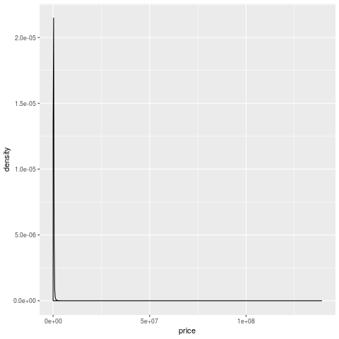
- So, when we do the simplest plot ever (a one-way summary of price), it looks pretty weird.
- Most of the density is in the one line near zero, and there's a long tail that goes up to 100mn
- who are these people buying houses for many millions of euros?
- most importantly, how can I become one of them?
The first thing to do when you find something weird like this is to take a look at the observations and see if they are different 13. Let's sort the data by price and look at the addresses.
arrange(prop_df, desc(price)) %>% select(address, county, date_of_sale, price) %>% head()
| address | county | date_of_sale | price |
|---|---|---|---|
| 2 CANNON HOUSE, CLANCY QUAY, DUBLIN 8 | Dublin | 2018-06-22 | 139165000 |
| APT 204 THE ALLIANCE, THE GASWORKS, BARROW ST | Dublin | 2018-06-22 | 87928183 |
| Block F K and L Central Park, Leopardstown | Dublin | 2014-07-24 | 86365000 |
| Blocks F K and L Central Park, Leopardstown | Dublin | 2014-03-28 | 70503358 |
| 182 THE ELYSIAN, EGLINTON STREET, CORK | Cork | 2018-07-27 | 69873482 |
| Binary Hub Roe's Lane, Bonham Street | Dublin | 2016-12-19 | 69208163 |
OK, so the Cannon house thing must be more than one apartment. Otherwise things have gone even madder than I thought. Also Apt 204 the Alliance, and 182 the Elysian 14. Entire apartment blocks for 76-86 million makes more sense, however.
arrange(prop_df, desc(price)) %>% select(address, county, date_of_sale, price) %>% tail()
| address | county | date_of_sale | price |
|---|---|---|---|
| 7 Greenfields, Lanesboro Road, Roscommon | Roscommon | 2015-05-22 | 5179 |
| 8 Greenfields, Lanesboro Road, Roscommon | Roscommon | 2015-05-22 | 5179 |
| 9 Greenfields, Lanesboro Road, Roscommon | Roscommon | 2015-05-22 | 5179 |
| LAVALLY, BALLINTOGHER | Sligo | 2014-05-01 | 5177 |
| Loghnabradden, Fintown, Co. Donegal | Donegal | 2012-01-11 | 5079 |
| CLOGHAN, GLENCOLMCILLE, DONEGAL | Donegal | 2014-07-18 | 5079 |
- there must be something really wrong with these houses.
It does tell us something about the tails15 of the crash, in that property was worth so little in Roscommon in 2015 that this happened. It may also be an error, as I don't know what kind of checking goes into this data.
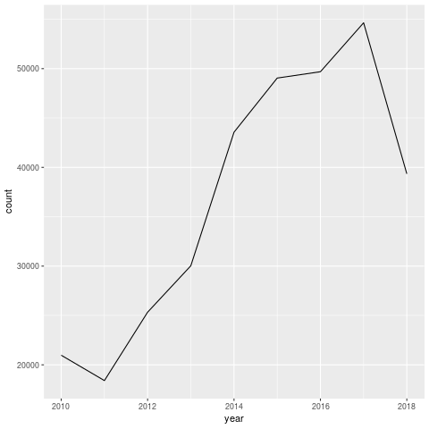
- Note that 2018 hasn't finished yet, which distorts the trend.
However, it's interesting to note that there weren't that many sales. Even at 55k it's only 5% of the housing stock 16. That's not a huge amount, but given the lack of data for the boom, it's very difficult to make those judgements.
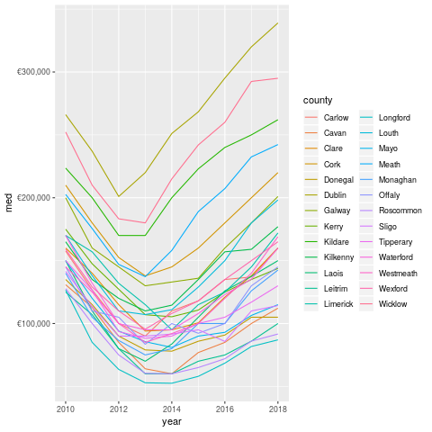
So the overall trend is pretty clear. The chart above shows median prices. For those of you who aren't stats nerds, the median is the middle value. If you laid out all the prices in a line, the median would be the middle of the line. This means that it's a reasonable summary of the distribution.
Really, you should look at the distribution itself, but aggregations such as the median are useful for plots and telling people about.
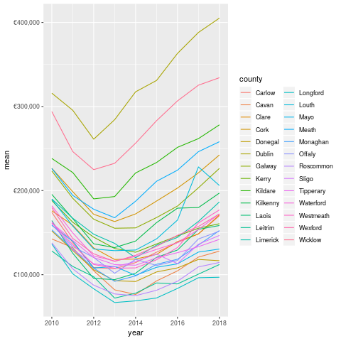
- The mean, which is the sum divided by the length of the set of numbers is much higher.
This is pretty normal in most sets of data because huge values at the top or bottom have more impact on the mean. Again, the same trend is pretty visible.
Note that I've filtered out the properties sold for more than 2mn, as these are mostly apartment blocks and groups of houses. These probably shouldn't be looked at for this analysis 17.
Looking closer at Dublin (and breaking down by postal code), we can see some more interesting patterns.
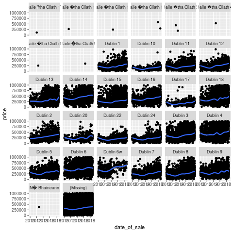
- Prices are definitely trending up, but there are some large outliers across the board.
Like this former house owned by an executive in Dublin 20, for example. That place definitely doesn't reflect the average experience in that area. In general, I'm beginning to think that there are multiple housing markets in Ireland, not one. This makes sense as one can only compete against others in the same price range. This would suggest that I should regard the house buying denizens of South Dublin to be some kind of alien species. I do enjoy when a data-driven theory agrees with my priors.
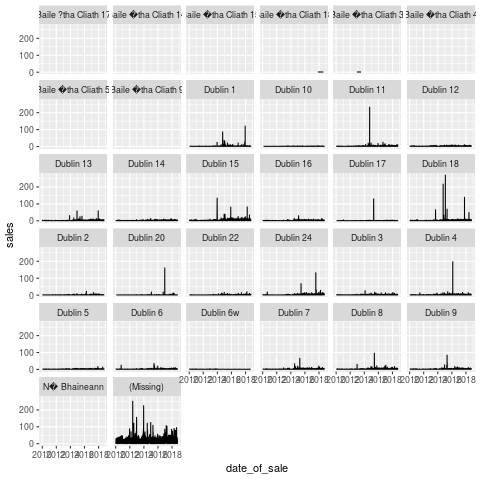
- Long periods of not much activity, followed by sudden spikes.
- We should probably dig into some of the spikes to figure out what they mean.
- It's possible that they may be one overall transaction recorded as multiples (for instance, when an entire apartment block is sold to one developer, and it's recorded unit by unit).
2.2 Mortgage Data
Most people who buy houses need mortgages, unfortunately. Fortuntately for me, we have a (reasonably good) source of information in this on the <INSERT_ORG_HERE> website.
The data goes back to 2011 (so not quite as much as our house price data), and is collected at a monthly cadence. It appears to be most of the high-street banks in ireland, and is only for mortgages on residential properties.
It comes in an Excel sheet. Whoever released this seemed to value the aesthetic principles of the dataset in preference to usability in computer programs. Given that the primary audience seems to be journalists, this probably makes sense.
I did some artisanal data cleaning 18 on the file, and imported all the data as per below.
require(readxl) mortgage_sheets <- excel_sheets("Website-mortgage-approvals-time-series-Sep2018.xls") volumes <- read_excel("Website-mortgage-approvals-time-series-Sep2018.xls", sheet="Volumes", skip=4) names(volumes)[c(1:2, 8)] <- c("year", "month", "total") volumes2 <- normalise_names(volumes) values <- read_excel("Website-mortgage-approvals-time-series-Sep2018.xls", sheet="Values", skip=4) names(values)[c(1:2, 8)] <- c("year", "month", "total") values2 <- normalise_names(values) av_values <- read_excel("Website-mortgage-approvals-time-series-Sep2018.xls", sheet="Average Value", skip=4) names(av_values)[c(1:2, 8)] <- c("year", "month", "total") av_values2 <- normalise_names(av_values) valtidy <- gather(values2, key="type", value="value", 3:7) %>% mutate(date=lubridate::ymd(paste( year, month, "01", sep="-_"))) voltidy <- gather(volumes, key="type", value="volume", 3:7) %>% mutate(date=lubridate::ymd(paste( year, month, "01", sep="-_"))) av_valtidy <- gather(av_values2, key="type", value="av_value", 3:7) %>% mutate(date=lubridate::ymd(paste( year, month, "01", sep="-_")))
Note the repeated code. Sometimes, a little copying is better than a large dependency. Sometimes people are lazy. Who can ever tell, in this workaday world?
The volumes tab is count, the values tab is in millions (1e6), and the average values tab is (presumably) the first divided by the second. There's also a notes tab, which we don't import 19
So, below we can see the volumes of mortgage approvals since 2011.
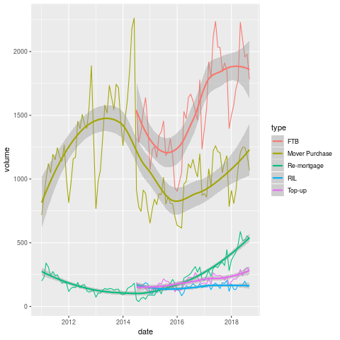 The most striking thing about this graph is the complete absence of first-time buyers between 2011 and 2014. I am tempted to declare it a data mistake, but given the economic conditions it is a little plausible. They may also suppress small numbers in the interests of privacy. It would be good if I figured this out, but I'll leave it for now.
When they do come back, they come back all at once, with near level FTB and traders-up. If this pattern held for the entirity of the boom, no wonder that things have gotten so messed up since.
Next, we look at the total value of mortgages issued to particular kinds of buyers over the time period.
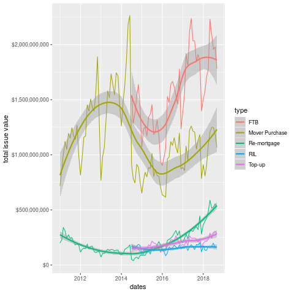
- So we have been 1-2bn per year for each of the FTB and Mover Purchase categories.
We can see what the average looks like in the plot below.
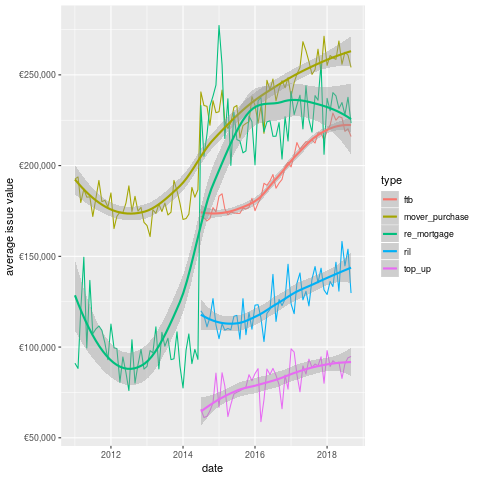
This chart is actually more interesting than either of the previous two. We can see that the average value given to FTB is significantly less than that for Mover Purchase. In some sense, this is weird as one would expect the movers to need less of a mortgage, given the existence of their previous property.
Another point that is obvious from the plot is the re-appearence of remortgaging in terms of value in 2014. Perhaps not coincidentally, the state emerged from the bailout program in December 2013 (paywall, but they have a few free articles).
Did the recovery in property prices encourage people to re-mortgage? Did the banks encourage these (presumably wealthy) borrowers? it's difficult to estbalish this from the data.
Additionally, given that I want to buy a house in Dublin, I'm not sure how useful the overall figures are. Unfortunately, this is all we have, which means we probably need more data (don't worry, we'll come back to the mortgage data eventually 20).
Next stop, the CSO!
2.3 Residential Prices by Month, Type of Property (HPM06)
The CSO have this arcane windows only application that people are supposed to use to get data. Being on Linux, I was SOL until some kind soul wrote code to access their database through an API.
They use a weird-ass format called JSON-Stat, which I know little about, but fortunately I can just call a function and get the data back as a dataframe.
source("rcso/read_api.R") prices <- getJSONstat("HPM06")
head(prices)
| type_of_residential_property | month | statistic | value |
|---|---|---|---|
| National - all residential properties | 2005-01-01 | Residential Property Price Index (Base Jan 2005 = 100) | 100 |
| National - all residential properties | 2005-01-01 | Percentage Change over 1 month for Residential Property Price Index (%) | nil |
| National - all residential properties | 2005-01-01 | Percentage Change over 3 months for Residential Property Price Index (%) | nil |
| National - all residential properties | 2005-01-01 | Percentage Change over 12 months for Residential Property Price Index (%) | nil |
| National - all residential properties | 2005-02-01 | Residential Property Price Index (Base Jan 2005 = 100) | 100.8 |
| National - all residential properties | 2005-02-01 | Percentage Change over 1 month for Residential Property Price Index (%) | 0.8 |
- So the type variable tells us what we are measuring, the statistic defines what the value means.
- This is awkward data to work with, but tidying it up should help.
We'll keep type in the rows, but move all the statistics into their own columns, to facilitate plotting.
prices2 <- spread(prices, key="statistic", value="value") prices3 <- normalise_names(prices2)
The names are still really long, but at least they don't have spaces anymore.
The variable we care about here is the index. This is normalised to 2005, at 100, so we can interpret the graph as the change since then.

Wow, so overall we're in 2005 again. I remember telling people not to buy houses around then. Mind you I was just bitter because no-one would give me a mortgage 21.
This kinda scares the hell out of me, but I suspect that the numbers of houses being sold today are a fraction of those sold during the boom.
2.4 New Property Prices
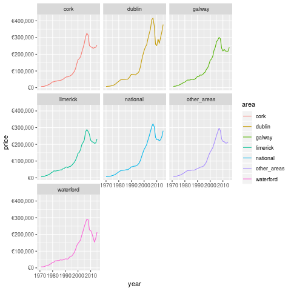
Wow, this is mental. House prices have basically only gone down a lot once, and that was the boom. This may be why many Irish people regard property as such a good asset. Additionally, we're now seeing ZIRP and QE inject large sums of money into the economy, which has pumped up asset prices 22.
On the other hand, Dublin looked pretty mental in 2015 (when this datasource stops). Note that this is only for new properties, which is skewed by the scarcity. I probably need to get some counts to normalise.
Additionally, I need to look at population flows over the time periods concerned. If I had counts for houses built and available, that would be super useful. Not sure if such a source exists, however.
2.5 Pulling it All Together
- So what have we learned from today's excursions?
Firstly, we reviewed the change in property prices by county and date of sale from the PPR. This source is entirely comprehensive, but only covers sales, so we can't figure out demand from this, except by looking at price. Additionally, the address data is pretty raw, and it would take a whole lot of time or cost a whole bunch of money 23 to make it more usable.
If that could be done, the CSO have a lot of good area data which I barely scratch the surface of here. The most obvious next avenue of approach is through population statistics and change rates, and this would be expected to impact demand for housing.
You could then normalise the data by the population and get more useful estimates.
However, another issue which we're ingoring is rents, as a lot of property is not available to be sold. This is becoming increasingly common, especially in Dublin. I believe that a bunch of the really large transactions in the PPR are the result of such arrangements. We can get rents from various websites, in compliance with all legal processes :)
Finally, we need to measure the delta between asking and sale prices. Again, this can be obtained through various web-scraping means and sources. This delta will then allow us to make somewhat (more) useful decisions with respect to property 24
So, that's what I'm going to do, I guess. To be fair, this post is probably more like 2-3 articles, but I can't handle not being finished anymore, so I'm calling it done.
3 Bayesian models, yo!
- Step one: take a ten percent sample
- Step two: wait loads of time for model to fit, give up in disgust
- Step 3: take a smaller sample
- Step 4: actually look at some data, huzzah!
smaller_sample <- sample_frac(prop_sample, size=.1)
require(rstanarm) stanlm <- stan_lmer(log(price, base=10)~year+(1|county), data=smaller_sample) stanlm2 <- stan_lmer(log(price)~(month|year)+(1|county), data=smaller_sample) stanlm3 <- stan_lmer(log(price)~+postal_code+ (month|year)+(1|county), data=smaller_sample) stanlm4 <- stan_lmer(log(price)~+vat_exclusive+not_full_market_price+ (postal_code|year)+(1|county), data=smaller_sample) dub_sample <- filter(prop_df2, county=="Dublin") %>% sample_frac(size=0.1) stanlm_dub <- stan_lmer(log(price)~+vat_exclusive+not_full_market_price+(postal_code|year), data=dub_sample)
So, using a smaller sample, and using a log-transform and normal approximation for price, we're in business.
The first model just fits a trend across year with county level intercepts. In R's formula notation it looks like the below
stanlm <- stan_lmer(log(price)~year+(1|county), data=smaller_sample)
- We need lmer because of the grouping factors
- I tried base 10 with this one, to make it easier to convert the coefficients in my head
We can use the marvellous broom package to grab some details out of the model. Before that though, we can call the eponymous plot() generic.
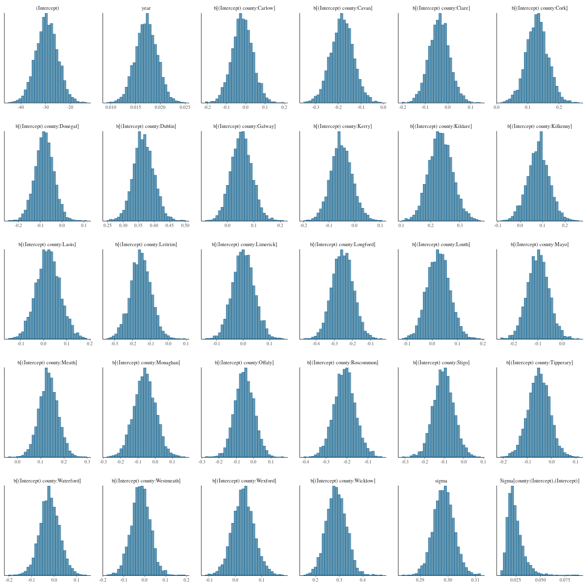
- This model kinda sucks.
- The intercept dominates, and there's little to nothing of interest.
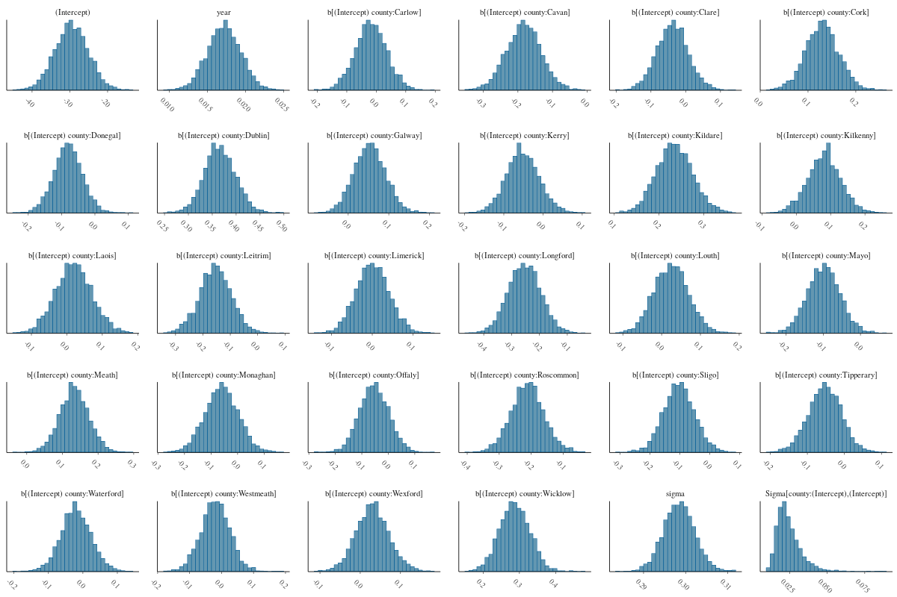
This is a histogram of the estimates.
I should probably break these out into a number of plots. On my hi-res laptop screen they look cool, though.
We can extract the fitted values and the residuals using the augment function from broom.
require(broom) auglm <- augment(stanlm) names(auglm)[1] <- "log_price" head(auglm)
so we have the fitted values, the original target variable, our covariates and the residuals Truly we are priveleged to be alive in such a time. To be fair, broom is very nice.
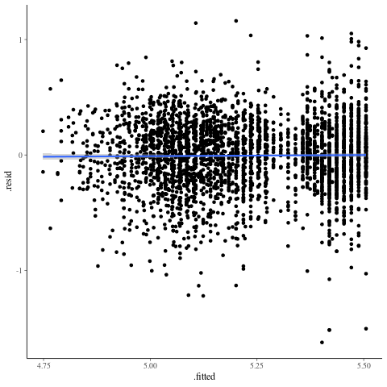 The residuals increase as we hit the tails, definitely. In general, we're not accounting for the trend across time here.
- Our predictions aren't entirely noise, but we don't handle the tails well at all.
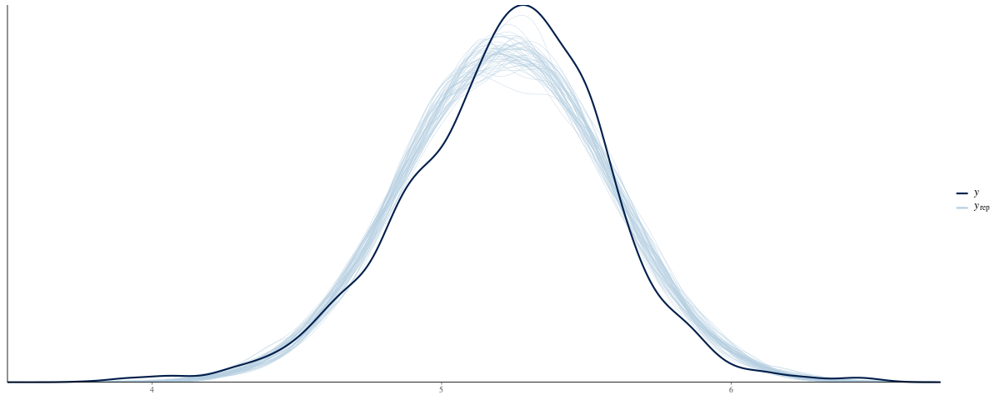
pp_check (from rstanarm) simulates 100 replications of Y given the model, and plots thea results against the actual y. This provides a quick and useful diagnostic of the model and whether or not it make sense.
require(broom)
tidy(stanlm3)
| term | estimate | std.error |
|---|---|---|
| (Intercept) | 11.3627285946104 | 0.154733297782236 |
| postal_codeDublin 10 | -0.41109031117536 | 0.26829141909359 |
| postal_codeDublin 11 | -0.173802967126711 | 0.167608728709565 |
| postal_codeDublin 12 | 0.211707512805625 | 0.161083990692815 |
| postal_codeDublin 13 | 0.351751352766792 | 0.174571463002829 |
| postal_codeDublin 14 | 0.850544366948465 | 0.175828046070598 |
| postal_codeDublin 15 | 0.104697991708676 | 0.144349977022833 |
| postal_codeDublin 16 | 0.550930577885318 | 0.164866411221373 |
| postal_codeDublin 17 | -0.115676682206768 | 0.2504145301438 |
| postal_codeDublin 18 | 0.522518676746559 | 0.156919249177992 |
| postal_codeDublin 2 | 0.35072605038513 | 0.203699368253987 |
| postal_codeDublin 20 | 0.0145478008340139 | 0.285285555125346 |
| postal_codeDublin 22 | 0.100125034977552 | 0.185726468173443 |
| postal_codeDublin 24 | 0.0636090405878655 | 0.153543332710066 |
| postal_codeDublin 3 | 0.401971561031699 | 0.175861941946171 |
| postal_codeDublin 4 | 0.584983004574166 | 0.174661206704215 |
| postal_codeDublin 5 | 0.366239167558408 | 0.181184171309947 |
| postal_codeDublin 6 | 0.911124521428617 | 0.208110364717554 |
| postal_codeDublin 6w | 0.671847431154482 | 0.306615927075424 |
| postal_codeDublin 7 | 0.317970976360636 | 0.164814422402402 |
| postal_codeDublin 8 | 0.0360325510562647 | 0.163860965698879 |
| postal_codeDublin 9 | 0.316256275733578 | 0.167580242195925 |
| postal_code(Missing) | 0.281938411974061 | 0.130642614164143 |
4 Some MCMC, for some reason
- Example taken from Appendix C, Bayesian Data Analysis (3rd Ed)
data { int<lower=0> J; //num schools real y[J]; //estimated treatment effects real<lower=0> sigma[J]; //se effect estimates } parameters { real mu; real<lower=0> tau; vector[J] eta; } transformed parameters { vector[J] theta; //school effects theta = mu + tau*eta; } model { eta ~ normal(0, 1); y ~ normal(theta, sigma); }
| school | estimate | sd |
| A | 28 | 15 |
| B | 8 | 10 |
| C | -3 | 16 |
| D | 7 | 11 |
| E | -1 | 9 |
| F | 1 | 11 |
| G | 18 | 10 |
| H | 12 | 18 |
schools <- read.csv("schools.csv") J <- nrow(schools) y <- schools$estimate sigma <- schools$sd library(rstan) schools_fit <- stan(file="schools.stan", data=c("J", "y", "sigma"), iter=2000, chains=4)
Footnotes:
In fact, it was done via banks, but it doesn't really have the same ring to it now, does it?
actually I've been in the same house for many years, but I likes a good simile.
by the Greens actually, so at least I don't feel my vote for them was entirely wasted
we do now, but they are not on any of the addresses
they also provide commercial data (which I just noticed), but I am resisting the urge to become distracted
for very nerdy, boring values of show
definitely.
You could use any character, but I like underscores. It's totally pointless though, so really we should just standardise on one 9
clearly underscores
this whole lack of understanding of encodings is deeply embarassing
look at how well I'm resisting distraction!
turns out sampling is pretty cool, who knew?
or you could just log it and get one with building a CNN I guess
that dude finally made his money back, after opening really expensive apartments just as the crash hit
geddit?
assuming 1mn households. I should probably check this with the CSO
yes, this is really subjective, like almost everything in data analysis. The advantage here is that I provide code so people can change that however they want
i.e. by hand
but i did in fact read it. Reading any notes provided is a super-power.
I don't think anyone except me worries about this
we all partied, dontcha know?
I am still not sure if this was just accidental, or malicious
I checked with a reasonably cheap provider, and it would be 800 quid for the whole sample
though presumably even if I built a working method, it would stop working as more people did it